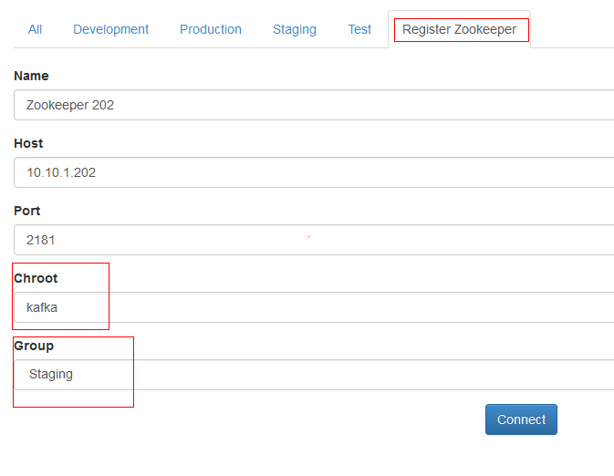
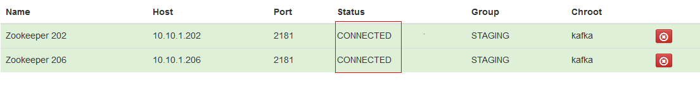

How to Setup Kafka Web Console
This project is hosted at https://github.com/claudemamo/kafka-web-console
It’s a very simple console that only suit for learning Kafka purpose.
Install Play Framework.
- Download here http://www.playframework.com/download
- Unzip to /path/to/play
- Build Play. /path/to/play/framework/build
Install Kafka-web-console.
- git clone https://github.com/claudemamo/kafka-web-console.git /path/to/kafka-web-console
- (or download the stable zip from https://github.com/claudemamo/kafka-web-console/releases)
Run the server
- Enable port 9000 for the server.
- cd /path/to/kafka-web-console
- /path/to/play/play start
- Then the web console is servicing on port 9000.
Configuration
register zookeeper
Check status to see if connected

- “Database xxx needs evolution!” - Solution for database is not initialized.
- use “play -DapplyEvolutions.default=true” to start.
- Or add “applyEvolutions.default=true” in conf/application.conf
– DONE